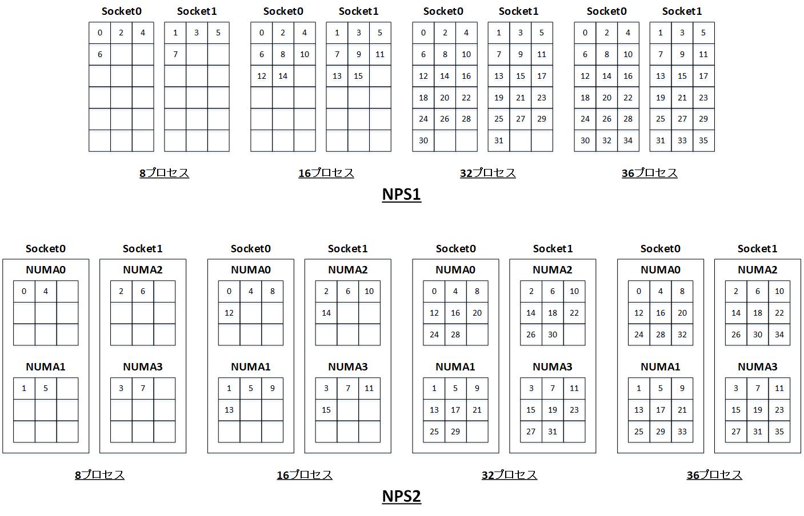
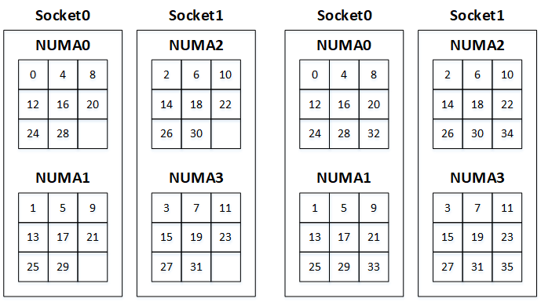

0. 概要
本パフォーマンス関連Tipsは、 BM.Optimized3.36 を クラスタ・ネットワーク でノード間接続するHPCクラスタで OpenFOAM を使用する際、CFD解析フローのコストパフォーマンスを最大化するという観点で、以下のTipsを解説します。
- メモリ帯域の有効利用を考慮した最適なノード内並列実行方法
- スケーラビリティーを考慮した最適なノード間並列実行方法
- NVMe SSDローカルディスクをストレージ領域に活用するノード間並列実行方法
本パフォーマンス関連Tipsの性能計測は、 OCI HPCテクニカルTips集 の OpenFOAMインストール・利用方法 に従って構築された OpenFOAM を使用し、 OCI HPCテクニカルTips集 の Slurmによるリソース管理・ジョブ管理システム構築方法 に従って構築された Slurm 環境でバッチジョブとして計測しています。
また、計算ノードに使用する BM.Optimized3.36 は、 OpenFOAM がメモリ帯域幅依存でハイパースレッディングによる効果は期待できないため、 OCI HPCパフォーマンス関連情報 の パフォーマンスに関連するベアメタルインスタンスのBIOS設定方法 の手順に従い SMT を無効化しています。
1. メモリ帯域の有効利用を考慮した最適なノード内並列実行方法
1-0. 概要
本Tipsは、 OpenFOAM の実行性能がプロセッサ演算処理あたり利用可能なメモリ帯域に大きく依存することを念頭に、以下のパラメータを変更することでノード内並列実行時の性能がどのように変化するか、また最も性能の良いパラメータの組み合わせは何かという観点で、性能計測とその考察を行います。
- NPS （Numa node Per Socket）（ NPS1 / NPS2 ）
- MPIプロセス数（8・16・32・36）
また、MPIプロセスのバインディングは、 NPS1 はソケット単位 NPS2 はNUMAノード単位でサイクリックにCPUコアにMPIプロセスランクを順次割り当てる（ Slurm のオプションで言うところの –distribution=block:cyclic ）ことで、各ソケット・NUMAノード当たりの割当てコア数が一定となり、結果各プロセスにメモリ帯域幅が均等に割り当てられるよう配慮します。

本Tipsは、以下の環境・条件で OpenFOAM のCFD解析フローの総所要時間（所要コスト）を計測しています。
- シェイプ ： BM.Optimized3.36
- BIOS設定 ： SMT 無効化、 NPS1 or NPS2 （※1）
- OS ： Oracle Linux 8.9ベースのHPC クラスタネットワーキングイメージ （※2）
- OpenFOAM ： v2312
- MPI ： OpenMPI 5.0.3
- 解析対象モデル ： OpenFOAM HPC Benchmark Suite の HPC_Motorbike の Small モデル
（ hpc/incompressible/simpleFoam/HPC_motorbike/Small/v1912/HPC_motorbike/Small/v1912 ） - 計算結果の出力頻度（ writeInterval ） ： 1,000タイムステップ（デフォルト）
※1）NPSの設定方法は、 OCI HPCパフォーマンス関連情報 の パフォーマンスに関連するベアメタルインスタンスのBIOS設定方法 を参照してください。
※2） OCI HPCテクニカルTips集 の クラスタネットワーキングイメージの選び方 の 1. クラスタネットワーキングイメージ一覧 のイメージ No.1 です。
この結果、以下のことが判明しています。
- NPS2 が NPS1 に対して 1.8 % 総所要時間が短い（MPIプロセス数36の場合）
- MPIプロセス数36の場合（計算ノードに搭載する全てのコアを使用する）が総所要時間が最も短い
1-1. 実行方法
本章は、 OpenFOAM HPC Benchmark Suite の HPC_Motorbike の Small モデルを使用し、 NPS とMPIプロセス数を指定して実行する方法を解説します。
この方法は、 OCI HPCテクニカルTips集 の OpenFOAMインストール・利用方法 の 4. CFD解析フロー実行 を参照し、ここで解説しているチュートリアル付属のオートバイ走行時乱流シミュレーションモデルのバッチ実行の方法を参考に、 OpenFOAM HPC Benchmark Suite の HPC_Motorbike の Small モデルにこれを適用します。
この際 NPS2 の場合は、 slurm.conf ファイルの NodeName=DEFAULT で始まる行を以下のように修正します。
NodeName=DEFAULT CPUs=36 Boards=1 SocketsPerBoard=4 CoresPerSocket=9 ThreadsPerCore=1 RealMemory=500000 TmpDisk=10000 State=UNKNOWN
また、ジョブスクリプトに指定する Slurm のオプションを以下のように指定します。
| NPS | MPIプロセス数 | -n | -N | –ntasks-per-node | –cpu-bind |
|---|---|---|---|---|---|
| 1 | 8 | 8 | 1 | 8 | verbose,cores |
| 16 | 16 | 1 | 16 | verbose,cores | |
| 32 | 32 | 1 | 32 | verbose,cores | |
| 36 | 36 | 1 | 36 | verbose,cores | |
| 2 | 8 | 8 | 1 | 8 | verbose,rank_ldom |
| 16 | 16 | 1 | 16 | verbose,rank_ldom | |
| 32 | 32 | 1 | 32 | verbose,rank_ldom | |
| 36 | 36 | 1 | 36 | verbose,rank_ldom |
また、本テクニカルTipsの 3. NVMe SSDローカルディスクをストレージ領域に活用する方法 の結果から、NVMe SSDローカルディスクを解析フローのストレージ領域に使用することが有効であると判明しているため本Tipsもこの方法を採用することとし、 3.0. 概要 に記載の7ステップにかかる時間を個別に取得出来るようにした上で、結果の妥当性を確認するために各テストケースをそれぞれ5回計測します。
なお、ここでは計算結果の出力頻度（ writeInterval ）にデフォルトの1,000タイムステップを使用している（計算結果を出力しない）ため、NVMe SSDローカルディスクを使用する効果は限定されます。
1-2. 実行結果とその考察
NPS とMPIプロセス数をパラメータとして実行した結果を以下に示します。
なお各計測値は、5回の計測結果の平均値です。
この結果から、 NPS に着目すると以下のことがわかります。
- 全てのMPIプロセス数で NPS2 が NPS1 より高速
- MPIプロセス数が増えるに従い NPS2 と NPS1 の差は縮小する
- 最も性能の良いMPIプロセス数36の場合で NPS2 は NPS1 より総所要時間が 1.8 % 短い
以上より、本テストケースでは NPS2 が有利であると結論付けることが出来るため、次に NPS2 のMPIプロセス数によるスケーラビリティーに着目します。
この結果から、以下のことがわかります。
- 計算ノードに搭載する36コアまでMPIプロセス数増加に伴い性能が向上する
- MPIプロセス数が増えるに従いスケーラビリティーは悪化する
- MPIプロセス数増加による性能向上の大部分は並列実行の非圧縮乱流解析ソルバー simpleFoam で発生している
- MPIプロセス数32と36の違いは3パーセント程度である
以上より、本テストケースをノード内並列実行する際コストパフォーマンスを最大化する実行方法は、 NPS2 と MPIプロセス数36 の組み合わせである、と判断できます。
2. ノード間並列スケーラビリティーを考慮した最適な実行方法
2-0. 概要
本Tipsは、 OpenFOAM を クラスタ・ネットワーク を跨いでノード間並列実行する場合、ノード数を1・2・4・8と増加させた場合にスケーラビリティーがどのように変化してコストパフォーマンスが何ノードで最大になるかという観点で、性能計測とその考察を行います。
また、 1. メモリ帯域の有効利用を考慮した最適なノード内並列実行方法 の結果から、 NPS 設定は NPS2 を使用し、ノード当たりのMPIプロセス数は32と36（性能差が3パーセント程度だったため）を使用します。
また、MPIプロセスのノード内バインディングは、 NUMAノード単位でサイクリックにCPUコアにMPIプロセスランクを順次割り当て（ Slurm のオプションで言うところの –distribution=block:cyclic ）ます。

本Tipsは、以下の環境・条件で OpenFOAM のCFD解析フローの総所要時間（所要コスト）を計測しています。
- シェイプ ： BM.Optimized3.36
- BIOS設定 ： SMT 無効化、 NPS2 （※3）
- ノード間接続 ： クラスタ・ネットワーク
- OS ： Oracle Linux 8.9ベースのHPC クラスタネットワーキングイメージ （※4）
- OpenFOAM ： v2312
- MPI ： OpenMPI 5.0.3
- 解析対象モデル ： OpenFOAM HPC Benchmark Suite の HPC_Motorbike の Small モデル
（ hpc/incompressible/simpleFoam/HPC_motorbike/Small/v1912/HPC_motorbike/Small/v1912 ） - 計算結果の出力頻度（ writeInterval ） ： 1,000タイムステップ（デフォルト）
※3）NPSの設定方法は、 OCI HPCパフォーマンス関連情報 の パフォーマンスに関連するベアメタルインスタンスのBIOS設定方法 を参照してください。
※4） OCI HPCテクニカルTips集 の クラスタネットワーキングイメージの選び方 の 1. クラスタネットワーキングイメージ一覧 のイメージ No.1 です。
この結果、ソルバー部分に着目すると、以下のことが判明しています。
- ノード数の増加に伴いリニアに性能が向上する
2-1. 実行方法
本章は、 OpenFOAM HPC Benchmark Suite の HPC_Motorbike の Small モデルを使用し、ノード数を指定して実行する方法を解説します。
この方法は、 OCI HPCテクニカルTips集 の OpenFOAMインストール・利用方法 の 4. CFD解析フロー実行 を参照し、ここで解説しているチュートリアル付属のオートバイ走行時乱流シミュレーションモデルのバッチ実行の方法を参考に、 OpenFOAM HPC Benchmark Suite の HPC_Motorbike の Small モデルにこれを適用します。
この際、 slurm.conf ファイルの NodeName=DEFAULT で始まる行を以下のように修正します。
NodeName=DEFAULT CPUs=36 Boards=1 SocketsPerBoard=4 CoresPerSocket=9 ThreadsPerCore=1 RealMemory=500000 TmpDisk=10000 State=UNKNOWN
また、ジョブスクリプトに指定する Slurm のオプションを以下のように指定します。
| ノード数 | ノード当たりの MPIプロセス数 |
-n | -N | –ntasks-per-node | –cpu-bind |
|---|---|---|---|---|---|
| 1 | 32 | 32 | 1 | 32 | verbose,rank_ldom |
| 36 | 36 | 1 | 36 | verbose,rank_ldom | |
| 2 | 32 | 64 | 2 | 32 | verbose,rank_ldom |
| 36 | 72 | 2 | 36 | verbose,rank_ldom | |
| 4 | 32 | 128 | 4 | 32 | verbose,rank_ldom |
| 36 | 144 | 4 | 36 | verbose,rank_ldom | |
| 8 | 32 | 256 | 8 | 32 | verbose,rank_ldom |
| 36 | 288 | 8 | 36 | verbose,rank_ldom |
また、本テクニカルTipsの 3. NVMe SSDローカルディスクをストレージ領域に活用する方法 の結果から、NVMe SSDローカルディスクを解析フローのストレージ領域に使用することが有効であると判明しているため本Tipsもこの方法を採用することとし、 3.0. 概要 に記載の7ステップにかかる時間を個別に取得出来るようにした上で、結果の妥当性を確認するために各テストケースをそれぞれ5回計測します。
なお、ここでは計算結果の出力頻度（ writeInterval ）にデフォルトの1,000タイムステップを使用している（計算結果を出力しない）ため、NVMe SSDローカルディスクを使用する効果は限定されます。
2-2. 実行結果とその考察
ノード当たりのMPIプロセス数とノード数をパラメータとして実行した結果を以下に示します。
なお各計測値は、5回の計測結果の平均値です。
この結果から、ノード当たりのMPIプロセス数に着目すると以下のことがわかります。
- 4ノードまではMPIプロセス数36が高速で8ノードはMPIプロセス数32が高速
- ノード数が増えるに従いMPIプロセス数36と32の差が縮小する傾向を示し8ノードで逆転する
- 最も性能の良いノード数8の場合でMPIプロセス数32が36より総所要時間が 1.3 % 短い
以上より、8ノードでの差が1%程度であることから、本テストケースの8ノードまでの実行であれば総合的にノード当たりのMPIプロセス数36が有利であると結論付け、次にノード当たりのMPIプロセス数36のノード数によるスケーラビリティーに着目します。
この結果から、以下のことがわかります。
- ノード数の増加に伴い性能が向上する
- ノード数が増えるに従いスケーラビリティーは悪化する
- ノード数増加による性能向上の大部分は並列実行の非圧縮乱流解析ソルバー simpleFoam で発生している
- ノード数の増加に伴い非並列実行の decomposePar の所要時間と全体に占める割合が増加する
以上より、非並列実行の decomposePar を予め1コアの仮想マシンインスタンスで実行する等の工夫により Step 2 までの実行をHPCクラスタから切り離し、 Step 3 以降の総所要時間を対象としたノード数によるスケーラビリティーに着目します。
この結果から、以下のことがわかります。
- ノード数の増加に伴いほぼリニアに性能が向上する（並列化効率がほぼ100％）
以上より、本テストケースを8ノードまでのノード間並列実行する際コストパフォーマンスを最大化する実行方法は、非並列実行の decomposePar をHPCクラスタから切り離して実行することを前提に、 ノード当たりのMPIプロセス数36 で 8ノード 実行する場合である、と判断できます。
3. NVMe SSDローカルディスクをストレージ領域に活用する方法
3-0. 概要
本Tipsは、 OpenFOAM が実行中に計算結果をファイルシステムに書き出す際、 BM.Optimized3.36 が搭載する高速なNVMe SSDローカルディスク上に作成したファイルシステムをその対象領域とすることで、CFD解析フロー全体の所要時間を短縮し解析コストを削減する方法を解説します。
OpenFOAM が実行中に作成するファイルは、総容量のみならず総ファイル数が多いため、NFSでサービスする共有ストレージに対して高いIOPS性能を持つNVMe SSDローカルディスクが有効で、特に高並列実行のケースや計算結果の出力頻度が高いケースでその効果を顕著に得ることが出来ます。
本TipsのNVMe SSDローカルディスクの使用方法は、 OpenFOAM のケースディレクトリがCFD解析フロー開始時点で通常共有ストレージに存在することを考慮し、共有ストレージ・NMVe SSDローカルディスク間でrsyncを使用してデータを同期しながら以下のステップで実行、 OpenFOAM がストレージ領域にアクセスする際、NMVe SSDローカルディスクを極力使用するよう配慮します。
- ヘッドノードで “共有ストレージ -> NVMe SSDローカルディスク” 方向のケースディレクトリ内全ファイルの同期
- ヘッドノードのNVMe SSDローカルディスク上で decomposePar を実行
- “ヘッドノードのNVMe SSDローカルディスク -> その他ノードのNVMe SSDローカルディスク” 方向のケースディレクトリ内全ファイルの同期
- 全ノードがNVMe SSDローカルディスクを使用して potentialFoam を並列実行
- 全ノードがNVMe SSDローカルディスクを使用して simpleFoam を並列実行
- “その他ノードのNVMe SSDローカルディスク -> ヘッドノードのNVMe SSDローカルディスク” 方向のケースディレクトリ内一部ファイルの同期
- ヘッドノードで “NVMe SSDローカルディスク -> 共有ストレージ” 方向のケースディレクトリ内一部ファイルの同期
ここで ステップ 3. と ステップ 6. の同期は、その他ノードのノード数（並列計算に使用する総ノード数マイナス1）分だけ並列実行することで、NVMe SSDローカルディスクの高いIOPS性能（ここでは特にヘッドノードのNVMe SSDローカルディスク）を有効に活用して所要時間の短縮を図ります。
また ステップ 6. の同期は、ファイルの同期を同時実行することによるヘッドノード上でのファイル競合を避けるため、各MPIプロセスが解析結果を格納する processorxx ディレクトリとその配下のファイルは、当該ノードに割り当てられたプロセスディレクトリのみを対象とします。
また ステップ 7. の同期は、各MPIプロセスが解析結果を格納する processorxx ディレクトリとその配下のファイルを除外し、ポスト処理に必要なファイルだけを同期することで、所要時間の短縮を図ります。
共有ストレージを使用する実行方法は、 ステップ 1. ・ ステップ 3. ・ ステップ 6. ・ ステップ 7. に時間を消費しませんが、NVMe SSDローカルディスクを使用する実行方法が共有ストレージを使用する実行方法に対して ステップ 2. ・ ステップ 4. ・ ステップ 5. で所要時間を短縮することが出来るため、トータルの実行時間はNVMe SSDローカルディスクを使用する実行方法が短くなります。
また、 1. メモリ帯域の有効利用を考慮した最適なノード内並列実行方法 と 2. ノード間並列スケーラビリティーを考慮した最適な実行方法 の結果と最もストレージ領域に負荷のかかる条件を選定するという観点から、以下の条件で計測します。
- NPS ： NPS2
- ノード当たりのMPIプロセス数 ： 36
- MPIプロセスのノード内バインディング ： NUMAノード単位サイクリック
- ノード数 ： 8
本Tipsは、以下の環境・条件で OpenFOAM を実行し、CFD解析フローの所要時間（所要コスト）を計測しています。
- シェイプ ： BM.Optimized3.36
- BIOS設定 ： SMT 無効化、 NPS2 （※5）
- ノード間接続 ： クラスタ・ネットワーク
- 比較対象の共有ストレージ ： ファイル・ストレージ （NFS）
- OS ： Oracle Linux 8.9ベースのHPC クラスタネットワーキングイメージ （※6）
- OpenFOAM ： v2312
- MPI ： OpenMPI 5.0.3
- 解析対象モデル ： OpenFOAM HPC Benchmark Suite の HPC_Motorbike の Small モデル
（ hpc/incompressible/simpleFoam/HPC_motorbike/Small/v1912/HPC_motorbike/Small/v1912 ） - 計算結果の出力頻度（ writeInterval ） ： 10タイムステップ（デフォルト値：1,000タイムステップ）
※5）NPSの設定方法は、 OCI HPCパフォーマンス関連情報 の パフォーマンスに関連するベアメタルインスタンスのBIOS設定方法 を参照してください。
※6） OCI HPCテクニカルTips集 の クラスタネットワーキングイメージの選び方 の 1. クラスタネットワーキングイメージ一覧 のイメージ No.1 です。
この結果、以下のことが判明しています。
- NVMe SSDローカルディスクは共有ストレージに対して所要時間（所要コスト）が 26.2 % 短い（安価）
3-1. 実行方法
本章は、 OpenFOAM HPC Benchmark Suite の HPC_Motorbike の Small モデルを使用し、NVMe SSDローカルディスクをストレージ領域に活用して実行する方法を解説します。
この方法は、 OCI HPCテクニカルTips集 の OpenFOAMインストール・利用方法 の 4. CFD解析フロー実行 を参照し、ここで解説しているチュートリアル付属のオートバイ走行時乱流シミュレーションモデルのバッチ実行の方法を参考に、 OpenFOAM HPC Benchmark Suite の HPC_Motorbike の Small モデルにこれを適用します。
この際、 OpenFOAM の設定ファイル system/controlDict の writeInterval を 10 に変更します。
この値がデフォルト値 1,000 のままの場合、計算結果を出力しないため、NVMe SSDローカルディスクの効果を得ることが出来ません。
また、 Slurm の設定ファイル slurm.conf ファイルの NodeName=DEFAULT で始まる行を以下のように修正します。
NodeName=DEFAULT CPUs=36 Boards=1 SocketsPerBoard=4 CoresPerSocket=9 ThreadsPerCore=1 RealMemory=500000 TmpDisk=10000 State=UNKNOWN
また、ジョブスクリプトに指定する Slurm のオプションを以下のように指定します。
| -n | -N | –ntasks-per-node | –cpu-bind |
|---|---|---|---|
| 288 | 8 | 36 | verbose,rank_ldom |
また、 2.0. 概要 に記載の7ステップにかかる時間を個別に取得出来るようにした上で、結果の妥当性を確認するために各テストケースをそれぞれ5回計測します。
3-2. 実行結果とその考察
共有ストレージを使用した場合とNVMe SSDローカルディスクを使用した場合の結果を以下に示します。
なお各計測値は、5回の計測結果の平均値です。

このグラフから、NVMe SSDローカルディスクを使用する実行方法は、共有ストレージを使用する実行方法に対して、以下のことがわかります。
- simpleFoam の実行時間が 40.4 % 短い
- decomposePar の実行時間が 34.2 % 短い
- rsyncのデータ転送総所要時間は 46 秒
- 総所要時間（計算ノードの総所要コスト）が 26.2 % 短い（安価）
以上より、NVMe SSDローカルディスクを使用するために実行方法をひと手間掛けることで、CFD解析フローのコストを大幅に削減可能であることがわかります。
またこのコスト削減は、高並列実行のケースや計算結果の出力頻度が高いケースでより大きな効果を得ることが出来ます。